Siggraph 2019
MeshCNN: A Network with an Edge
Abstract
Polygonal meshes provide an efficient representation for 3D shapes. They explicitly capture both shape surface and topology,
and leverage non-uniformity to represent large flat regions as well as sharp, intricate features. This non-uniformity
and irregularity, however, inhibits mesh analysis efforts using neural networks that combine convolution and pooling
operations. In this paper, we utilize the unique properties of the mesh for a direct analysis of 3D shapes using MeshCNN,
a convolutional neural network designed specifically for triangular meshes. Analogous to classic CNNs, MeshCNN combines
specialized convolution and pooling layers that operate on the mesh edges, by leveraging their intrinsic geodesic
connections. Convolutions are applied on edges and the four edges of their incident triangles, and pooling is applied
via an edge collapse operation that retains surface topology, thereby, generating new mesh connectivity for the
subsequent convolutions. MeshCNN learns which edges to collapse, thus forming a task-driven process where the network
exposes and expands the important features while discarding the redundant ones. We demonstrate the effectiveness
of our task-driven pooling on various learning tasks applied to 3D meshes.
The Layers of MeshCNN
In MeshCNN the edges of a mesh are analogous to pixels in an image, since they are the basic building blocks
for all CNN operations. Just as images start with a basic input feature: an RGB value per pixel;
MeshCNN starts with a few basic geometric features per edge. The input edge feature is a 5-dimensional vector
every edge: the dihedral angle, two inner angles and two edge-length ratios for each face.
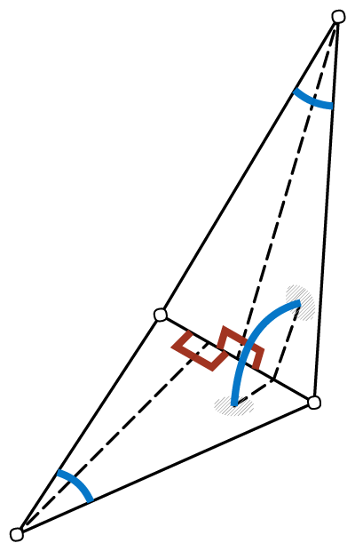
Input Edge Features
MeshCNN learns features on the edges of the mesh, since every edge is incident to exactly two faces (triangles),
which defines a natural fixed-sized convolutional neighborhood of four edges.
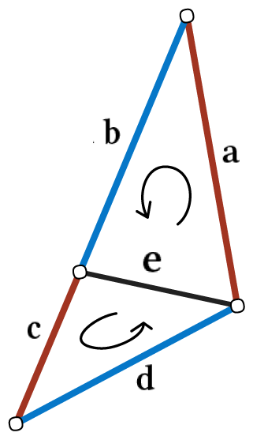
Mesh Convolution
Learned convolutional filters are applied on each edge feature vector and the 4 one-ring neighbors.
The consistent face normal order is used to apply a symmetric convolution operation, which learns edge
features that are invariant to rotations, translations and uniform scale.
Mesh pooling downsamples the number of features in the network, by performing a edge-collapse on the learned
edge features. The new edge neighbors are computed dynamically inside the network, and used in the next convolutions.

Mesh Pooling & Unpooling
For fully-convolutional tasks (such as segmentation), a mesh unpooling operation is used to restore the
original mesh resolution.
Results
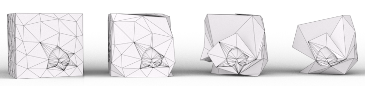
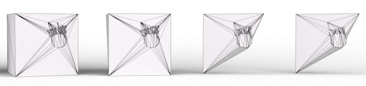
Learned Simplifications on Cube Dataset
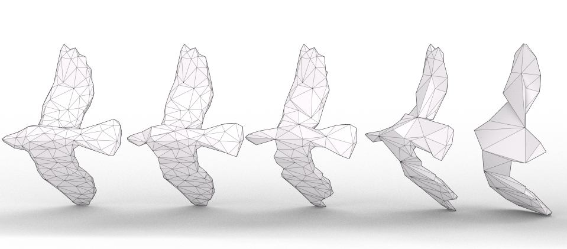
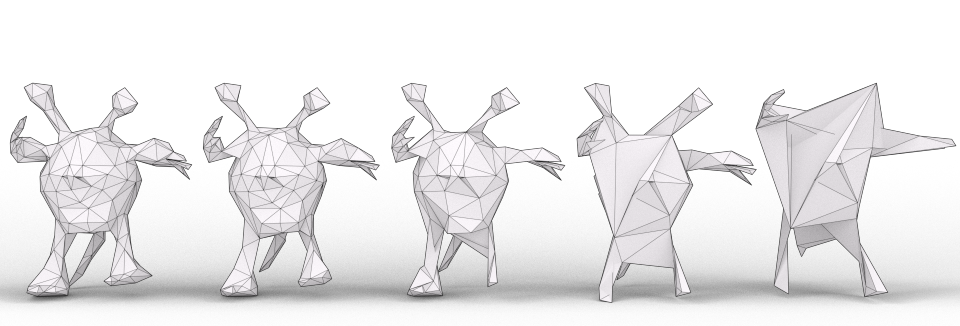
Learned Simplifications on Shrec Dataset
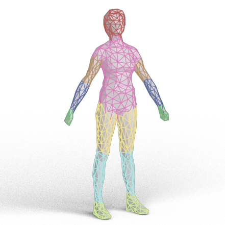

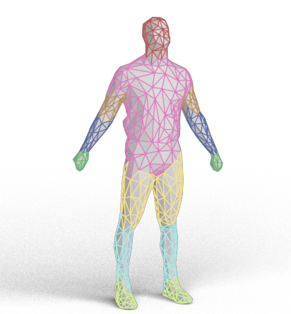
Human Segmentation Results
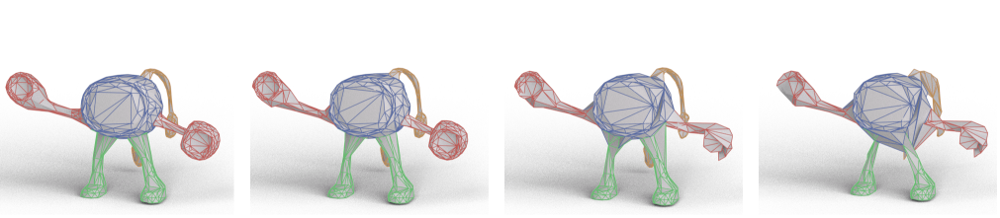
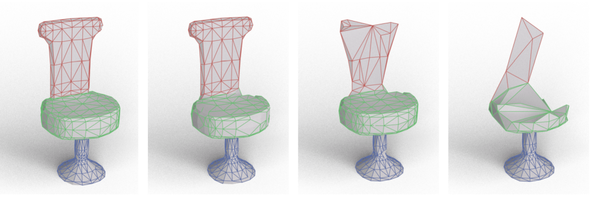
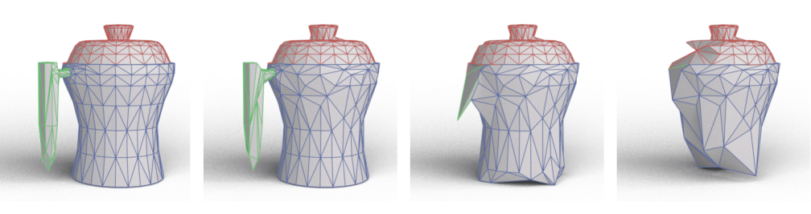
Coseg Segmentation Results
Contact
Rana at Hanocka dot com